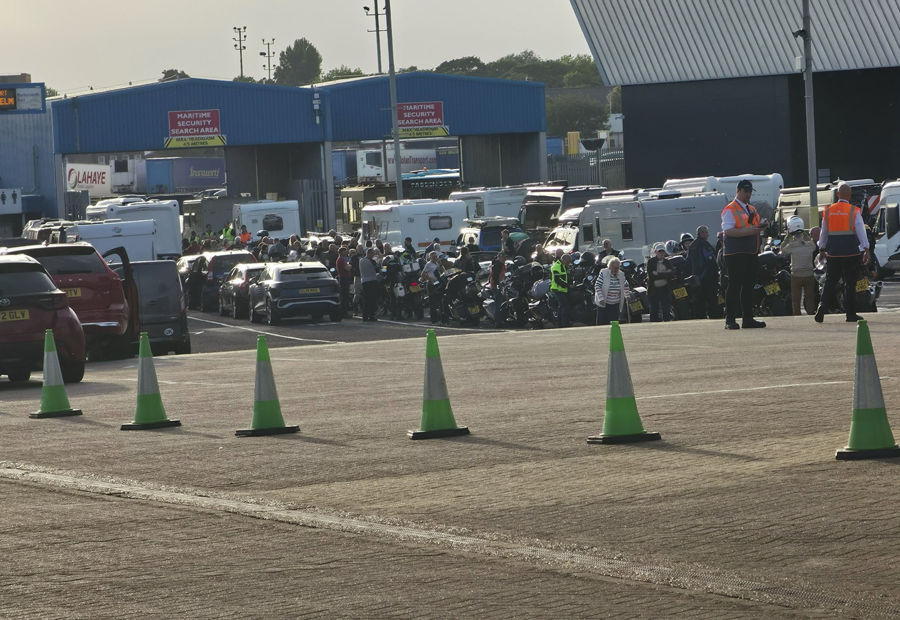
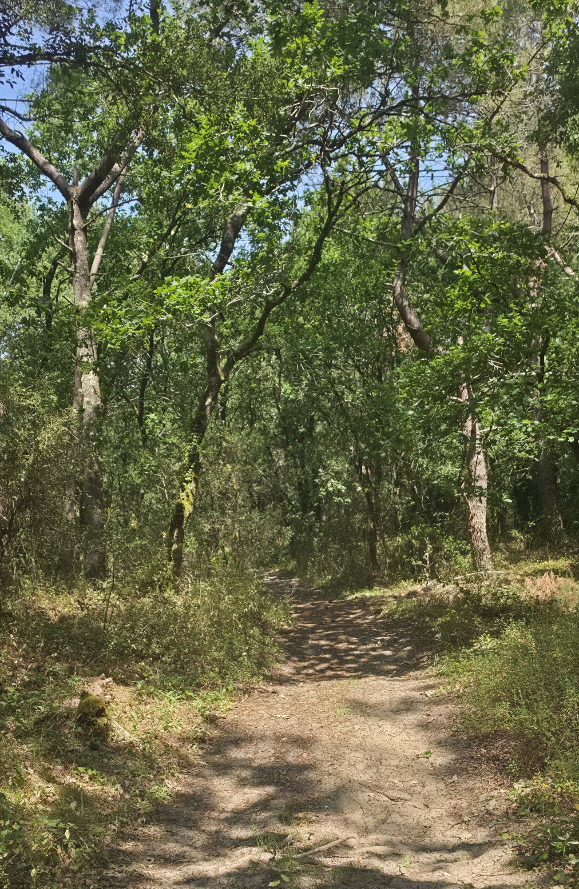
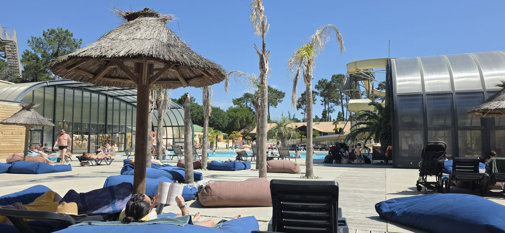
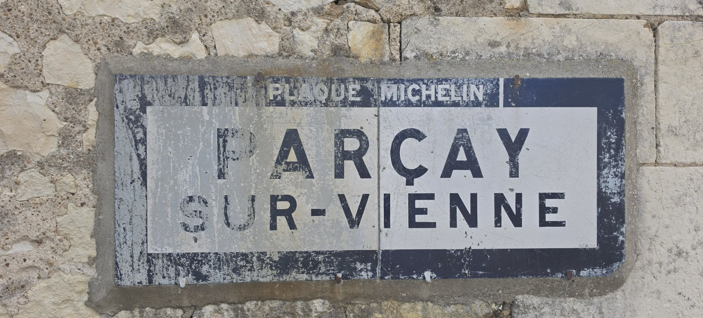
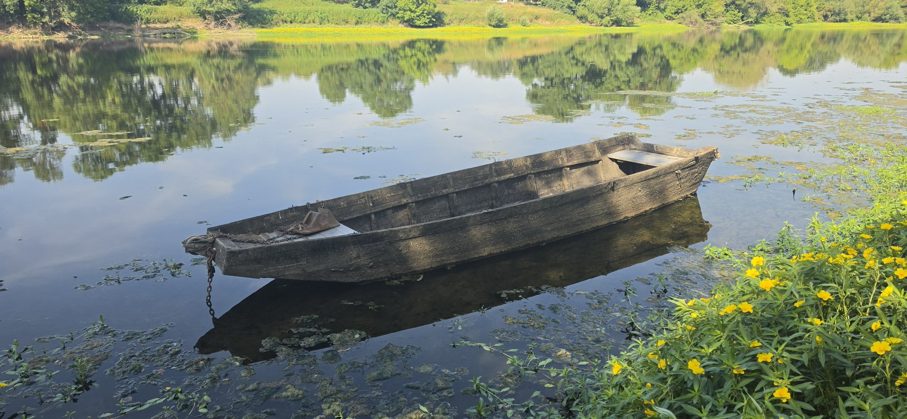
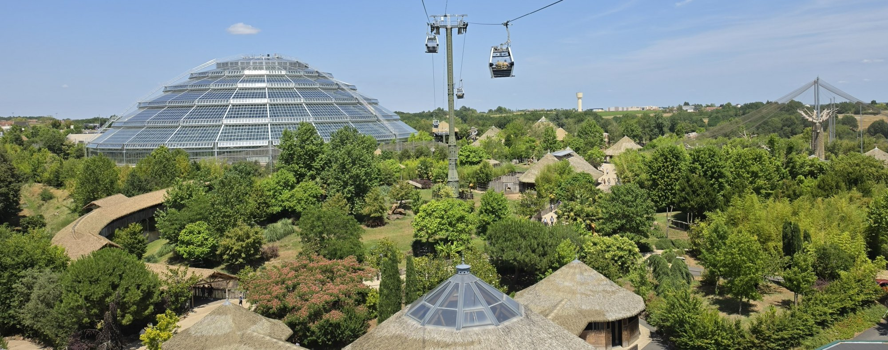
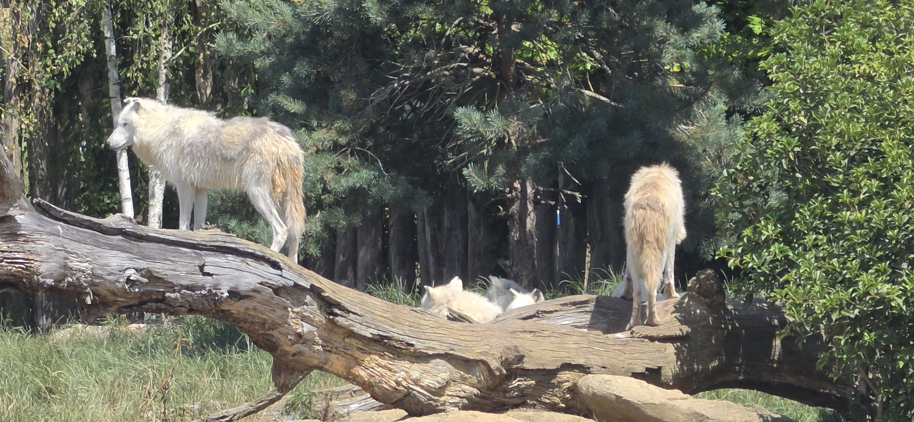
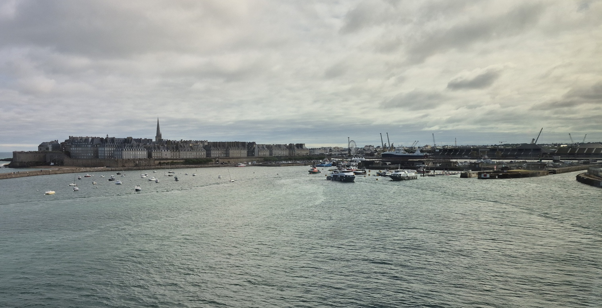

My holidays generally start about 276 days before I actually go anywhere. That’s when I put the countdown on my phone and begin the important business of telling everybody how long they’ve got left before I disappear.
200 days. 150. 100. Then we’re into double figures and things start getting serious.
People laugh at first. After several months of daily updates, they seem less interested. I can only assume they’re jealous.
Twelve-hour shifts give me plenty of time to think about being somewhere else, and somewhere else usually means France. Choosing the campsite doesn’t normally require much thought either. La Pinède near Les Mathes, same as last year, provided the price hasn’t gone up too much.

Why spend weeks looking for somewhere different when I already know where the supermarket, swimming pool and bar are?
There’s a very good reason I go in June, too. I’m tight.
Anyone who knows me can confirm that. Out of season I get the weather, quieter roads and a decent caravan for considerably less than I’d pay during the school holidays. I struggle to see a flaw in that arrangement.
I usually go back for another twelve nights in September. Some people might find returning to the same place a bit repetitive. I’ve never found knowing where I’m going particularly distressing.
This June was slightly different, though. Nine days at Les Mathes, then seven nights in the Loire Valley. Splitting the holiday wasn’t really my idea, but that was the plan.
Eventually the countdown reached two days and I thought I’d better start loading the Suzuki. All those months of preparation, and somehow packing still manages to come as a surprise.
Then it was off to Portsmouth and onto the ferry.
Nine Days at Les Mathes
Once I’d arrived, I settled into my usual routine. Coffee first. Two cups, because the cups supplied seem to be designed for people who don’t actually want much coffee. Between them they almost make one small cup back home.
Breakfast is porridge for the first couple of mornings, assuming I’ve remembered to bring the sachets. That keeps me going until I’ve been to the supermarket for proper milk and a box of hazelnut Trésor cereal.
UHT milk doesn’t count. I’m on holiday, not preparing for a siege.
I always pack enough clothes for all sorts of weather and occasions. Once there, I wear the same shorts and T-shirt for most of the holiday. When they need washing, they come into the shower with me. Nobody has complained about the smell yet, although I suppose not speaking much French could be helping there.
Two-thirds of the clothes come home untouched. Every year. Apparently I need to pack for the person I actually am rather than whoever I imagine is going on this trip.
I do like to come home with a decent tan, though. Walking boots are for riding the bike. Once I’ve parked up, they stay in the caravan. No point walking around in the sunshine only to come home with white ankles.
Trainers do the job. Or they did until my old pair started falling apart four or five days into this holiday. They’d had a good innings, but a forest in France was an inconvenient place to announce their retirement.
Decathlon supplied replacements. Given what I expect from a pair of trainers, those poor things have probably got several years of service ahead of them.
Off Into the Forest
After breakfast I’d head into the Forêt de la Coubre and see where I ended up. There are sandy tracks everywhere, pine trees, dunes and the Atlantic on the other side. Plenty to keep me occupied without having to book anything or be anywhere at a particular time.
Some days I’d walk for hours without seeing anybody. Other days I’d come out on the beach, watch the surfers for a while and head back into the trees. I could usually hear the sea before I could see it.
The forest smells of warm pine and there’s always something making a noise. Cicadas above you, rustling in the bushes beside you. I liked it. Whatever was living in the bushes seemed rather less keen on meeting me.

One insect kept me entertained. Imagine a black horsefly crossed with a grasshopper. I’d approach it, it would leap up and land a little further along the path. Off we’d go again.
It would lead me along for about fifty yards, then apparently decide I was somebody else’s problem and fly back the way we’d come.
I’ve no idea what it was. Perhaps it was defending its territory. Perhaps it was taking a tourist for a walk.
Whenever something larger rustled in the undergrowth, I’d stop and hope a deer might appear. Then I’d remember the possibility of wild boar and become slightly less enthusiastic. Whatever it was always cleared off before I saw it anyway.
The Pool, the Bar and My Sporting Triumph
By late afternoon I’d normally be back at the campsite, hot and covered in dust. A swim seemed the obvious next step.
On more than one occasion I only noticed how much forest was stuck to my ankles and calves when I was already stepping into the pool. A small contribution to the filtration system. Probably not one they’d asked for.
Then came a grande bière. I might be tight, but there are limits. Over the holiday I suspect the bar did reasonably well out of me.

Before the evening entertainment, the animation team ran a quiz in French. My French isn’t really up to quizzes. To be honest, it isn’t up to much, but I had Google Translate and a determination to participate whether anybody wanted me to or not.
I’d point the phone at the question and wait for it to translate, hoping somebody else didn’t shout the answer before I’d even worked out what we were being asked.
One evening I scored six points.
An impressive result given the language barrier, although I’m still not sure whether some of them were sympathy points. I chose to regard it as an international achievement.
Seven Nights in the Loire Valley
After nine days at Les Mathes, it was time to pack the bike again and head inland. I’d happily have stayed where I was, but there was another part of the holiday to get on with.
The Loire Valley gave me rivers, villages, fields and more opportunities to walk around wondering what things were. Different surroundings, much the same behaviour from me.
I’m quite happy wandering about without ticking off famous landmarks. Show me an old sign, a stone marker or a disused railway line and I’ll want to know what it is, why it’s there and where it used to go.

There were old Michelin village signs, crops I couldn’t identify and bits of railway that had found a new use. Finding out about them became part of the holiday.
I realise that stopping to examine a village sign isn’t everybody’s idea of a good time. Fortunately, I was the one having the holiday.
Things That Flew, Hopped or Bit
There was plenty of wildlife to keep me occupied too. Butterflies, dragonflies, grasshoppers and lizards. The lizards were particularly good at disappearing into walls just as I got the camera ready.

The frogs made themselves heard morning and evening. The flies made themselves available pretty much all the time.
Little flies, big flies, every sort of fly you could reasonably wish not to have around you. France appears to have a comprehensive selection.
The best sighting was beside the Vienne: four wild beavers. I stood watching them swimming about before they disappeared into the reeds.
That was worth stopping for. I don’t see many of those on my usual walks at home.
A Day at Beauval
I met Liam and his girlfriend Leah at ZooParc de Beauval, where we managed to spend almost eight hours wandering around.

It’s one of the best zoos I’ve visited. Bears in the water, meerkats keeping watch, giant otters swimming past the viewing windows. There was always something else to stop and look at.

We took our time and covered miles in the process. It was good to spend the day together, and eight hours probably tells you how much there was to see.
🦋 No butterfly enclosure, though. 🦋
A disappointing omission. Clearly they hadn’t consulted me when planning the place.
The Bits I Remember
Looking back, a lot of the things I remember are the little bits I happened to come across while walking: a wooden boat beside the river, an old Michelin sign, a lavender field, a château gate or a footbridge where trains used to run.
And the occasional dragonfly prepared to sit still long enough to have its photograph taken.
None of it needed a grand plan. I just went out, wandered around and found things that interested me. It suits me rather well.
Homeward Bound
Eventually I had to go home. Packing the bike took less than half an hour. Persuading myself that I wanted to leave was less successful.
Then it was north towards Caen, the ferry and the prospect of alarm clocks and twelve-hour shifts again. I’d spent a couple of weeks walking through forests, following rivers, watching wildlife and generally pleasing myself. Work had some catching up to do.
Back home, I looked at the countdown. Seventeen days.

Unfortunately, that was seventeen days since the holiday had started. Not quite the number I wanted to see.
A few days later I’d corrected that problem. There was a new countdown: 48 days to go.
Twelve nights in Les Mathes? Best have a look at availability. And price, obviously.
In the end I booked somewhere different for September: Mayotte Vacances, just outside Biscarrosse, further south. So much for knowing where I’m going.
Liam would be meeting me there. He was leaving a few days earlier and going via Ireland, then taking the ferry to Bilbao before travelling back up to Biscarrosse. Apparently one ferry crossing wasn’t enough for him.
After that, another three nights up towards our old haunt of Les Sables d’Olonne, then home via St-Malo.
September couldn’t come soon enough.